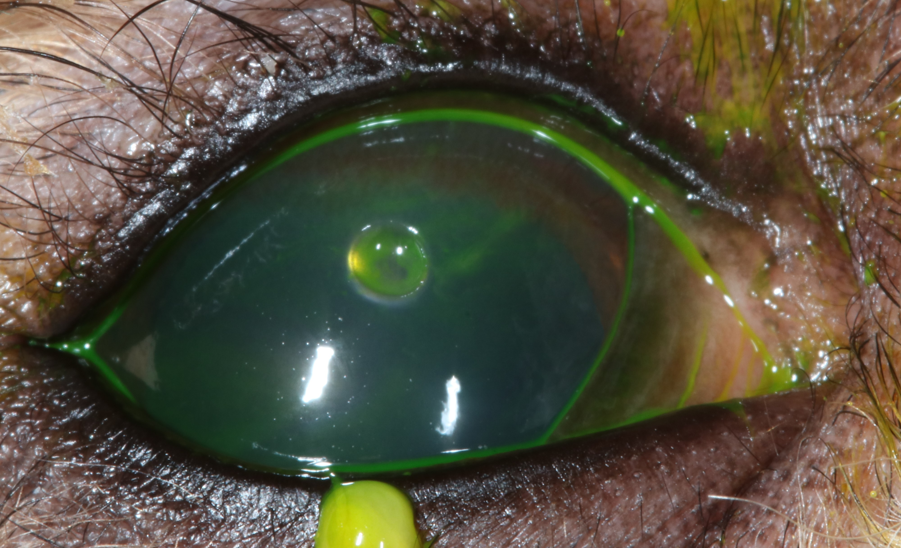
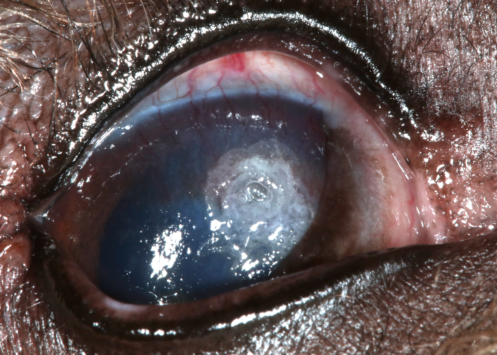
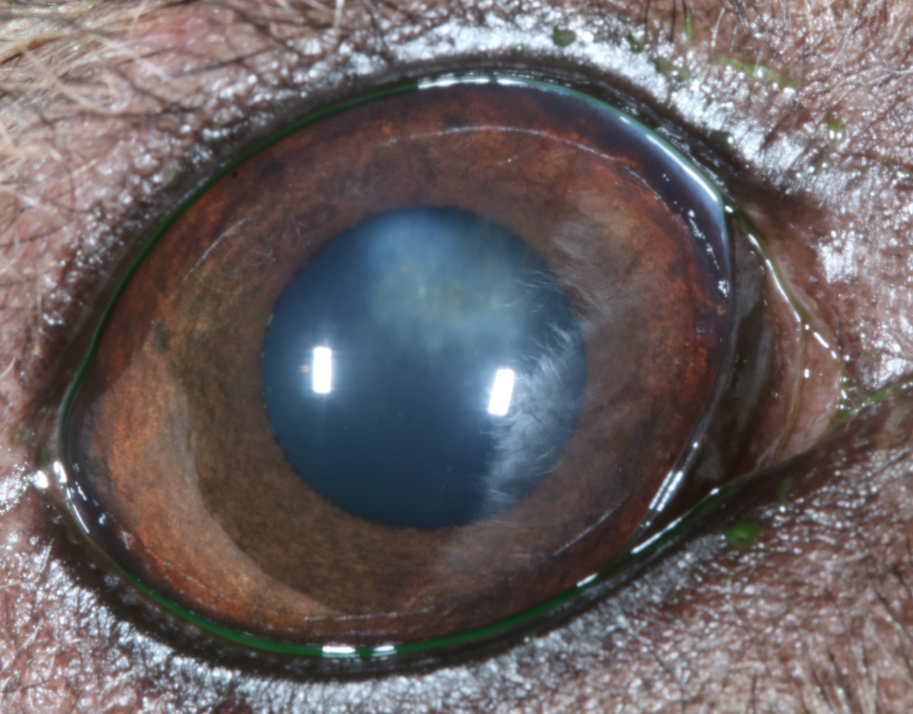
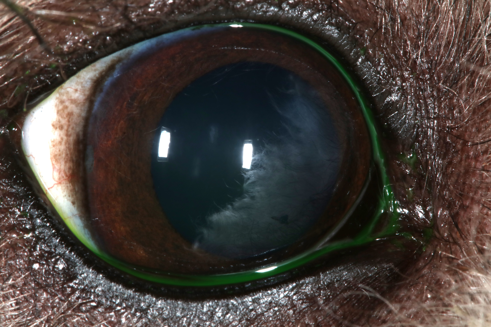
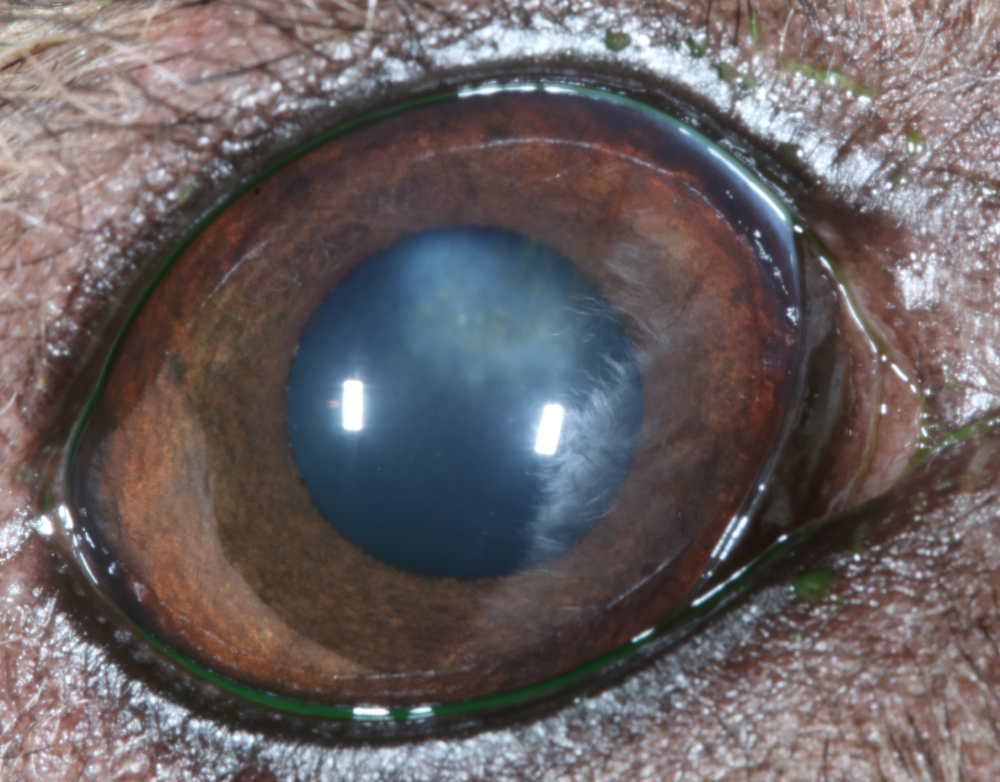
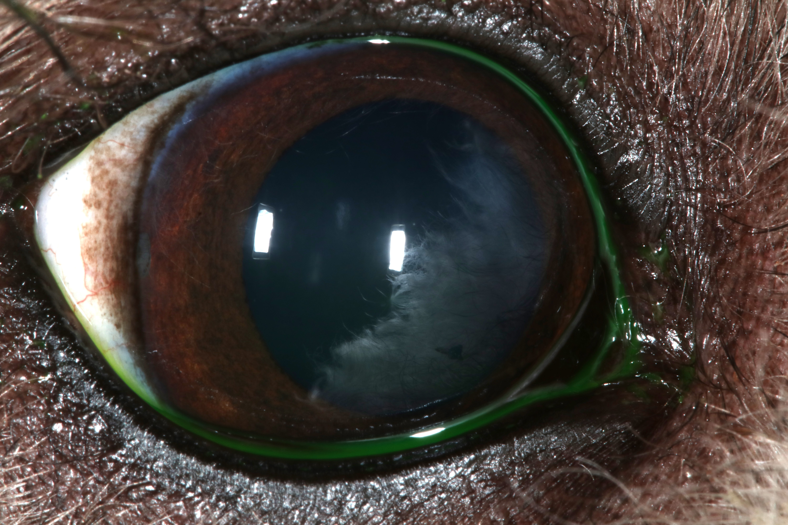
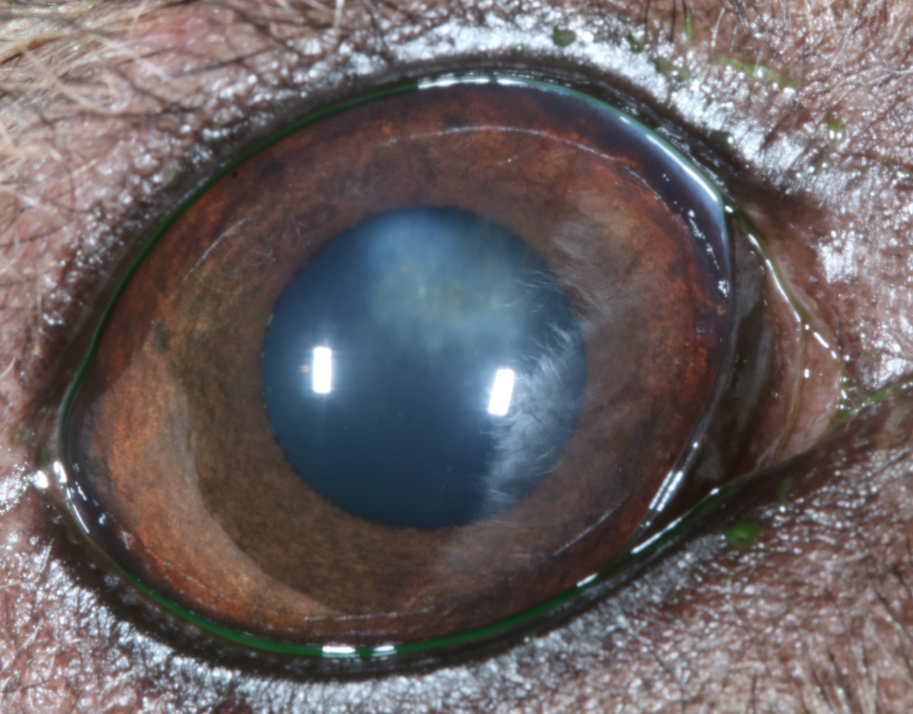
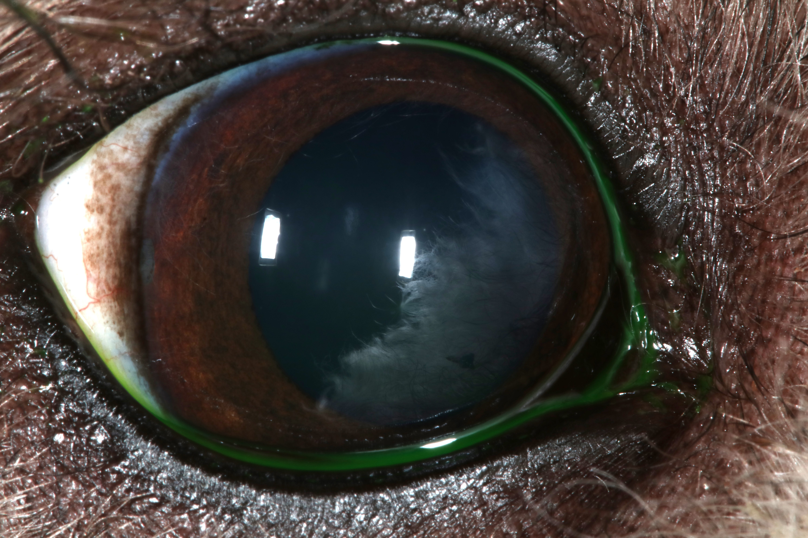
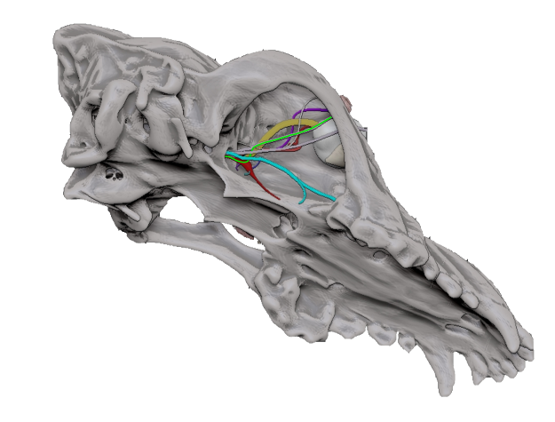

Neurogenic Keratoconjunctivitis Sicca (NKCS) is characterised by a lack of tear production due to impaired neural stimulation, often leading to severe ocular surface diseases such as corneal ulcers. Standard treatment involves using pilocarpine, a parasympathomimetic agent that stimulates tear production by acting on muscarinic M3 receptors of acinar cells. However, the restoration of normal tear production is usually slow, necessitating alternative treatment options for associated complications like corneal ulcers.
Introduction▼
Case Presentation▼
A 4-year-old male neutered Bedlington Terrier with a history of NKCS presented with a deep stromal corneal ulcer in the right eye (OD). Clinical signs included ipsilateral xeromycteria and a Schirmer tear test (STT) result of 0 mm/min, indicating absent tear production. Despite ongoing treatment with pilocarpine, tear production had not returned to normal, leading to the development of the corneal ulcer.
Methods▼
Ulcer Treatment: The corneal ulcer was treated using n-butyl cyanoacrylate tissue adhesive:
- The ulcerated corneal surface was cleaned and de-epithelized under topical anaesthesia.
- The tissue adhesive was applied, rapidly polymerizing to fill the corneal defect.
- A contact bandage lens was placed over the treated area.
- Chloramphenicol ointment was applied QID.
- Frequent ocular lubrication with carbomer was administered.
- Oral pilocarpine 1% was continued, starting at 4 drops BID. The dose was increased by one drop every 3 days until tolerated.
Results▼
The corneal ulcer healed with minimal fibrosis. The STT improved to 16 mm/min by day 37, whilst on oral pilocarpine 1% dosage of 9 drops BID. The use of n-butyl cyanoacrylate tissue adhesive facilitated rapid ulcer closure and reduced healing time, resulting in minimal corneal scarring.
Discussion & Conclusion▼
In cases of corneal ulceration secondary to NKCS, the use of n-butyl cyanoacrylate tissue adhesive may offer a viable alternative to more invasive procedures. This minimally invasive approach can be performed without specialized equipment or general anesthesia, promoting faster healing with minimal scarring. The positive outcomes observed in this case suggest that tissue adhesive may be a valuable treatment option in selected cases of corneal ulceration, particularly when conventional tear stimulation is inadequate. Overall, n-butyl cyanoacrylate tissue adhesive presents an effective and practical solution for managing corneal ulcers in dogs with NKCS, with potential to enhance clinical outcomes.
Poster Photos▼


 





Neuro-anatomy 3D Model▼

This model was created based on a real dog skull MRI, then a 3D software was used to add neural pathways.
The parasympathetic innervation of the lacrimal gland responsible for tear production can be followed in the Poster via a light green line:
These fibres travel via CN VII, the greater petrosal nerve, Vidian nerve, pterygopalatine ganglion, and zygomaticotemporal nerve (a branch of CN V2), directly reaching the lacrimal gland.
Abstract▼
A 4-year-old male neutered Bedlington Terrier previously diagnosed with Neurogenic Keratoconjunctivitis Sicca (NKCS) was presented with a deep stromal corneal ulcer in the right eye (OD). Clinical signs of NKCS such as ipsilateral xeromycteria and absent tear production (Schirmer tear test (STT) 0mm/min) were present at consultation. Failure of normal tear production and ocular lubrication, crucial for ocular health, often leads to corneal ulceration in patients with NKCS. Notwithstanding treatment with pilocarpine, which acts on muscarinic M3 receptors of acinar cells, thus bypassing the conventional neural pathway, the return to normal tear production is protracted. An alternative approach to treatment of the corneal ulcer comprised the use of n-butyl cyanoacrylate tissue adhesive to cover the defect once the ulcerated surface was cleaned and de-epithelised after topical anaesthesia. Following a fast polymerisation process, the procedure was repeated once more, filling the corneal defect. A contact bandage lens was applied, and treatment started with chloramphenicol ointment QID and frequent ocular lubrication (carbomer). Treatment with oral pilocarpine 1% at a dose of 4 drops BID was continued, with the dosage increased by one drop in food every 3 days until tolerated. The corneal ulcer healed with minimal fibrosis, and STT was 16mm/min by day 37 (9 pilocarpine drops BID). Treatment with tissue adhesive may be indicated in selected cases of corneal ulceration secondary to NCKS. The procedure is minimally invasive and can be performed without the need of specialised equipment or general anaesthesia, and results in reduced healing time and minimal corneal scarring.
.PNG Poster▼
{kind=link}
References▼
- Galley AP, Beltran E, Tetas Pont R. Neurogenic keratoconjunctivitis sicca in 34 dogs: A case series. Vet Ophthalmol. 2021;24(6):737-744. DOI: 10.1111/vop.12949.
- Luo L, Li DQ, Doshi A, Farley W, Corrales RM, Pflugfelder SC. Experimental dry eye stimulates production of inflammatory cytokines and MMP-9 and activates MAPK signaling pathways on the ocular surface. Invest Ophthalmol Vis Sci. 2004;45(12):4293-4301. DOI: 10.1167/iovs.03-1145. PMID: 15557435.
- Watté CM, Elks R, Moore DL, McLellan GJ. Clinical experience with butyl-2-cyanoacrylate adhesive in the management of canine and feline corneal disease. Vet Ophthalmol. 2004;7(5):319-326. DOI: 10.1111/j.1463-5224.2004.00327.x. PMID: 15310291.